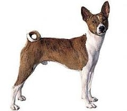

<? title('Басенджи') ?>
<table border="0" class="layout">
    <colgroup span="1"><col width="15%" span="1"></col><col width="25%" span="1"></col><col width="60%" span="1"></col></colgroup> 
    <tbody>
        <tr>
            <td>
                <div class="holster">
                    <div class="block_container s3 b-text b-static-text user_css_12816005438" id="e_127774495358"><span></span></div>
                </div>
            </td>
            <td>
                <div class="holster">
                    <div class="block_container s3 b-text b-static-text user_css_12816005438" id="e_128264275468">
                        <p style="text-align: center;"><strong><span style="color: #3366ff;">Басенджи</span></strong></p>
                        <p style="text-align: justify;"><span style="color: #3366ff;"><strong>Из истории породы&nbsp;:</strong> название породы произошло от слова basenji, что на языке банту означает "лесная собака". Предки басенджи жили, по-видимому, ещё в древнем Египте: каменные барельефы очень похожих на них собак найдены во многих гробницах египетских фараонов. Европейские путешественники обнаружили басенджи чуть более 100 лет назад в Центральной Африке: их использовали здесь как стайных охотничьих собак. В начале XX века басенджи попали в Великобританию, но вскоре погибли от собачей чумы, к которой у них не было иммунитета. Лишь с 1937 года басенджи стали разводить в Англии, а с 1941 году и в США.</span></p>
                        <p style="text-align: justify;"><span style="color: #3366ff;"><strong>Общая характеристика:</strong> эта порода знаменита тем, что не умеет лаять. Но, как и другие собаки, она умеет рычать и скулить, и может выразить свои чувства отчетливым хихиканьем и тирольским подвыванием. Басенджи известны своей доброжелательностью и привязанностью к детям и вместе с тем недоверчивостью к незнакомым людям. Они крайне любопытны и шаловливы, весёлые и бойкие.</span></p>
                        <p style="text-align: justify;"><span style="color: #3366ff;"><strong>Содержание и уход:</strong> Басенджи - прирождённые охотники, и при недостаточных нагрузках они быстро набирают лишний вес. Они нуждаются в частых прогулках и свободном беге. Собак этой породы нельзя держать на улице в конуре. Это исключительно домашние животные, которые любят растянуться поближе к камину или, по необъяснимой склонности, пристроиться где-нибудь повыше от пола. Они вполне годятся для содержания в городских квартирах при условии достаточного выгула. Необходима регулярная чистка специальной собачьей рукавицей.</span></p>
                        <p style="text-align: justify;"><span style="color: #3366ff;"><strong>Размеры:</strong> рост 43 см (кобели), 40 см (суки), вес 10-11 кг.</span></p>
                        <p style="text-align: justify;"><span style="color: #3366ff;">____________________________________________</span></p>
                        <p style="text-align: justify;"> </p>
                    </div>
                </div>
            </td>
        </tr>
    </tbody>
</table>​